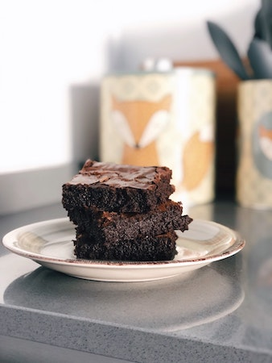

Brownies

Description
Ein guter Brownie braucht nicht viel Chichi. Hauptsache, es ist wie hier ausreichend Schokolade im Spiel!
Ingredients
- 250g Butter
- 300g Zartbitterschokolade
- 4 Eier (Gr. M)
- 250g brauner Zucker
- Salz
- 200g Mehl
- 50g Backkakao
- 1 TL Backpulver
Steps
- Backofen vorheizen (E-Herd: 175 °C/Umluft: 150 °C/Gas: s. Hersteller). Quadratische Springform (24 x 24 cm; ersatzweise rund, 26 cm Ø) fetten. Für den Teig Schokolade in Stücke brechen. Mit 250 g Butter in Stücken in einem Topf bei schwacher Hitze schmelzen.
- Eier, Zucker und 1 Prise Salz mit den Schneebesen des Rührgeräts 3–4 Minuten cremig aufschlagen. Schokoladenbutter vom Herd nehmen und sofort in die Eiermasse rühren.
- Mehl, Kakao und Backpulver mischen. Zügig unter die Schokoladen-Eier-Masse rühren.Teig in die Form geben und glatt streichen.
- Im heißen Ofen ca. 25 Minuten backen. Der Brownie soll nicht ganz durchgebacken sein. Daher sind bei der Stäbchenprobe auch noch Teigspuren auf dem Holzspieß. Herausnehmen, auskühlen lassen. Vorsichtig aus der Form lösen und in ca. 4 x 4 cm große Stücke schneiden.